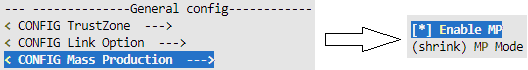
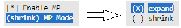
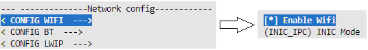
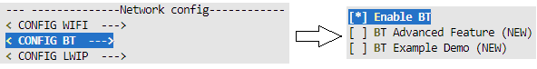

MP Image
In response to the different needs of user, SDK provides two types of mass production (MP) image: shrink MP image and expand MP image. Both MP images are capable to run complete MP test. The comparison between them is listed below.
Image |
Size |
Download address |
Download time |
Lifetime |
Description |
|---|---|---|---|---|---|
Shrink |
Small |
RAM |
Short |
Lost after power off |
|
Expand |
Large |
Flash |
Long |
Retain after power off |
|
Image Generation
The steps of generating MP image are depicted below:
Switch to work directory
{SDK}\amebadplus_gcc_project.Use command
$make menuconfigto modify the configurations.Enable MP.

For shrink MP image, just keep default shrink MP mode. For expand MP image, change MP mode to expand.

Enable Wi-Fi.

Enable BT.

Save and exit the menuconfig.
Use command
$make allto build the project.
{kind=link}
{kind=link}
{kind=link}
{kind=link}
Note
The MP image consists of bootloader firmware and application firmware, and both of them are generated under
{SDK}\amebadplus_gcc_project.The application firmware is
km0_km4_app_mp.bin, while the name of bootloader firmware is different.For expand MP image, the bootloader firmware is
km4_boot_all.bin.For shrink MP image, in order to distinguish with bootloader of normal image, the bootloader firmware is modified to
km4_boot_all_mp.bin.
Image Download
There are two methods to download MP image to the chip:
Use image tool to download MP image directly.
The address configuration in image tool is different between shrink MP image and expand MP image. Besides, it is required to click Option menu and select Reset after download before downloading shrink MP image.
Image tool download configuration Image
Bin
Start address
End address
Shrink
km4_boot_all_mp.bin
0x20012000
0x2001A000
km0_km4_app_mp.bin
0x2001A000
0x20080000
Expand
km4_boot_all.bin
0x08000000
0x08014000
km0_km4_app_mp.bin
0x08014000
0x08200000
Use image tool to generate
Image_All.bin, then use 1-N MP tool to downloadImage_All.bin.This method applies to download MP image to multiple chips at the same time.
Image tool generate configuration Image
Bin
Offset
Shrink
km4_boot_all_mp.bin
0
km0_km4_app_mp.bin
0x8000
Expand
km4_boot_all.bin
0
km0_km4_app_mp.bin
0x14000
1-N MP tool download configuration Image
Bin
Offset
Shrink
Image_All.bin
0x20012000
Expand
Image_All.bin
0x08000000
MP Test
Wi-Fi and BT Performance Verification
There are two methods to verify the Wi-Fi and BT performance of the chip: standard MP test and fast MP test. These two methods apply to different test conditions and are included in both shrink MP image and expand MP image.
Method |
Cost |
Test time |
Accuracy |
Description |
|---|---|---|---|---|
Standard |
High |
Long |
Use the professional tester to do wired test |
|
Fast |
Low |
Short |
High |
Use the golden board offered by realtek to do wireless test |
Standard MP Test
Refer to MP flow.pdf for details.
Fast MP Test
Refer to Fast MP flow.pdf for details
User-defined Function Verification
Besides Wi-Fi and BT performance verification, adding extra function verification in MP image is supported.
For example, to verify the GPIO function of some pins, APIs defined in gpio_api.c are available to implement a test command.
Others such as serial_api.c and spi_api.c apply to UART and SPI function verification.
Note
For adding a custom command in SDK, refer to atcmd.pdf for details.
User data
Besides image, it is optional to download user data to chip during MP process. According to different circumstances, it is important to select an appropriate way to download user data.
For example, for common data such as audio file, it is recommended to combine it with image into a bin file by image tool and download the combined file to every chip. While for special data, such as product license, which is unique and corresponds to the MAC address of the chip, combining data and image before downloading may not be appropriate because data file is different between every chip. It is more acceptable to transmit data to chip through LOGUART after MP image runs, which requires user to implement a command for receiving data file and writing it into Flash in MP image.
Note
The SDK can support transmitting up to 4KB data at a time through LOGUART when longer command in menuconfig is enabled. For programing Flash, flash_api.c provides related APIs.